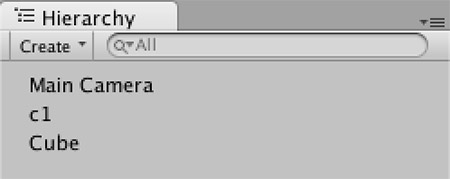

矩阵基础 2
2016-5-16
上一篇矩阵基础1
Case4
如何使用三根基轴构建矩阵？其实这个问题以前已经讨论过，思路可以看下相机空间矩阵。再次提出，主要是因为上次我没有在代码里测试过，只是理论，并且这个方法是可以推广到任意矩阵上，而不只是局限于相机空间矩阵。这次实际用到了，所以我先在 CSharp 中实现了，相信迁移到 Shader 中也并非难事。一个小技巧是，对于一些比较难调试自己又没把握的问题，如果可能的话最好先在程序代码中实现，再迁移到 Shader 中，而不要直接在 Shader 中编写，因为程序代码可以很方便的进行调试，快速定位错误，而这是 Shader 所做不到的（目前我还没有发现什么好的工具）。

最终的目标是在将世界空间的 Cube 变换到 c1 的局部坐标系下（这是最简单的情况）。如果直接使用 Unity 提供的接口（worldToLocalMatrix 和 localToWorldMatrix）也是可以做到的。但是这里我们使用自己的方法。思路就是：从 A 坐标系 变换到 B 坐标系，首先在 A 坐标系下表示出 B 坐标系的三根基轴，然后使用这三根基轴组成变换矩阵（组合方法见这里） ，得到的这个矩阵就是我们想要的变换矩阵（注意行向量和列向量的区别）。
// 使用三根基轴构建矩阵
// 如果只是用来变换法线的话，matR就已经够了，直接做变换操作即可
Matrix4x4 matR = Matrix4x4.identity;
matR.SetRow(0, new Vector4(c1.right.x, c1.right.y, c1.right.z, 0));
matR.SetRow(1, new Vector4(c1.up.x, c1.up.y, c1.up.z, 0));
matR.SetRow(2, new Vector4(c1.forward.x, c1.forward.y, c1.forward.z, 0));
newNormal = matR * new Vector4(normal.x, normal.y, normal.z, 0);
// 位移矩阵
Matrix4x4 matT = Matrix4x4.identity;
matT.SetRow(0, new Vector4(1, 0, 0, -c1.position.x));
matT.SetRow(1, new Vector4(0, 1, 0, -c1.position.y));
matT.SetRow(2, new Vector4(0, 0, 1, -c1.position.z));
// 缩放矩阵
Matrix4x4 matS = Matrix4x4.identity;
matS.SetRow(0, new Vector4(c1.localScale.x, 0, 0, 0));
matS.SetRow(1, new Vector4(0, c1.localScale.y, 0, 0));
matS.SetRow(2, new Vector4(0, 0, c1.localScale.z, 0));
// 如果用来变换顶点，那么需要同时使用 matR matT matS 这三个矩阵
// 注意相乘的顺序是非常重要的，不可颠倒
Matrix4x4 mat = matS * matR * matT;
newPos = mat * new Vector4(pos.x, pos.y, pos.z, 1);